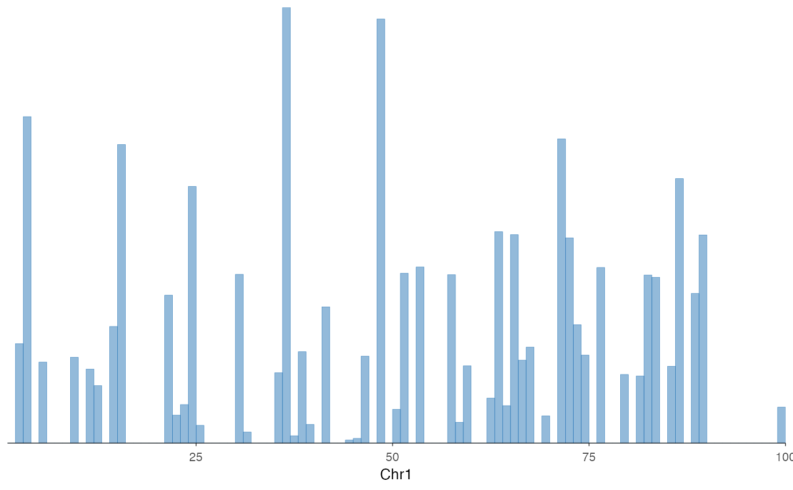
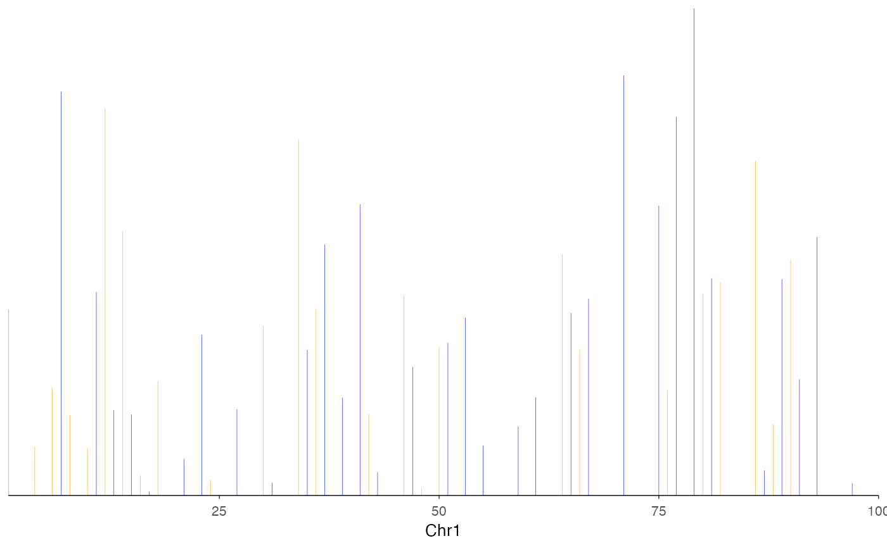

This function creates a coverage track visualization from various input types. It provides a flexible interface with support for grouping and multiple tracks.
Usage
ez_coverage(
input,
region = NULL,
gene = NULL,
gene_db = NULL,
org_db = NULL,
extend = 0.1,
extend_type = c("proportion", "bp"),
track_labels = NULL,
type = c("area", "line", "heatmap"),
group_var = NULL,
color_by = c("group", "track"),
colors = NULL,
y_axis_style = c("none", "simple", "minmax", "full"),
y_range = NULL,
alpha = 0.5,
bin_width = NULL,
area_border = TRUE,
facet_label_position = c("top", "left"),
border = FALSE,
show_legend = FALSE,
label_chr = TRUE,
average = FALSE,
summary_fun = c("mean", "median", "max", "min", "sum"),
average_bin_width = 50,
...
)Arguments
- input
A GRanges object, data frame, character vector of file paths, or named list of data sources.
- region
Genomic region to display (e.g., "chr1:1000000-2000000"). Either
regionorgene(withgene_db) must be provided.- gene
Gene name/symbol to look up (e.g., "PTPRC", "TP53"). When provided, the region is automatically determined from the gene coordinates in
gene_db. Eitherregionorgenemust be provided.- gene_db
TxDb object for gene coordinate lookup when using
geneparameter (e.g., TxDb.Hsapiens.UCSC.hg38.knownGene).- org_db
Optional OrgDb object for gene symbol mapping. If NULL (default), auto-detects available OrgDb packages.
- extend
Numeric. Amount to extend the region beyond the gene body when using
geneparameter. Default: 0.1 (10% of gene length on each side).- extend_type
How to interpret
extend: "proportion" (relative to gene length) or "bp" (absolute base pairs). Default: "proportion".- track_labels
Optional vector of track labels (used for character vector input)
- type
Type of signal visualization: "line", "area", or "heatmap" (default: "area")
- group_var
Column name for grouping data within a single data frame (default: NULL)
- color_by
Whether colors distinguish "group" or "track" (default: "group")
- colors
Color(s) for the coverage track. Can be a single color or a vector of colors for multiple tracks/groups (e.g., c("blue", "orange", "green")). If fewer colors than tracks/groups are provided, colors will be recycled. When NULL (default), uses vibeColors palette if available, otherwise "steelblue". For multiple tracks with a single color, automatically uses a colorblind-safe palette.
- y_axis_style
Y-axis style: "none", "simple", "minmax", or "full" (default: "none")
"none": No y-axis displayed
"simple": Shows y-range as [min - max] label at top-left
"minmax": Shows only min and max values on y-axis with ticks
"full": Full y-axis with all ticks and labels
- y_range
Y-axis range limits. When NULL (default), uses the global maximum across all tracks so all tracks share the same y-scale.
- alpha
Transparency (default: 0.5)
- bin_width
Width of bins in base pairs (default: NULL)
- area_border
Logical; if
TRUE(default), draws thin borders on area rectangles to eliminate white-line rendering artifacts. Only affectstype = "area".- facet_label_position
Position of facet labels: "top" or "left" (default: "top")
- border
Logical. If
TRUE, adds a black border around the plotting panel (default: FALSE)- show_legend
Logical. If
TRUE, displays the legend (default: FALSE)- label_chr
Logical. If
TRUE(default), labels the x-axis with the chromosome name (e.g., "Chr1"). Set toFALSEto suppress the x-axis label.- average
Logical. If
TRUE, averages overlapping tracks into a single track before plotting. Applies wheninputis a character vector of multiple file paths (overlapping tracks), or wheninputis a named list whose elements are character vectors with multiple files (averages within each list element separately, keeping tracks independent). Usesaverage_signal()internally. (default: FALSE)- summary_fun
Summary function used when
average = TRUE. One of"mean","median","max","min","sum". (default:"mean")- average_bin_width
Bin width (in bp) for the averaging grid when
average = TRUE. (default: 50)- ...
Additional arguments passed to geom_coverage
Examples
# From a GRanges object
library(GenomicRanges)
#> Loading required package: stats4
#> Loading required package: BiocGenerics
#>
#> Attaching package: ‘BiocGenerics’
#> The following objects are masked from ‘package:stats’:
#>
#> IQR, mad, sd, var, xtabs
#> The following objects are masked from ‘package:base’:
#>
#> Filter, Find, Map, Position, Reduce, anyDuplicated, aperm, append,
#> as.data.frame, basename, cbind, colnames, dirname, do.call,
#> duplicated, eval, evalq, get, grep, grepl, intersect, is.unsorted,
#> lapply, mapply, match, mget, order, paste, pmax, pmax.int, pmin,
#> pmin.int, rank, rbind, rownames, sapply, setdiff, sort, table,
#> tapply, union, unique, unsplit, which.max, which.min
#> Loading required package: S4Vectors
#>
#> Attaching package: ‘S4Vectors’
#> The following object is masked from ‘package:utils’:
#>
#> findMatches
#> The following objects are masked from ‘package:base’:
#>
#> I, expand.grid, unname
#> Loading required package: IRanges
#> Loading required package: GenomeInfoDb
#> Warning: package ‘GenomeInfoDb’ was built under R version 4.3.3
gr <- GRanges(
seqnames = "chr1",
ranges = IRanges(start = 1:100, end = 1:100),
score = rnorm(100)
)
ez_coverage(gr, "chr1:1-100")

# Single data frame with grouping
df <- data.frame(
seqnames = "chr1", start = 1:100, end = 1:100,
score = rnorm(100), sample = rep(c("A", "B"), 50)
)
ez_coverage(df, "chr1:1-100", group_var = "sample", colors = c("blue", "orange"))

if (FALSE) { # \dontrun{
# Using gene name instead of coordinates
library(TxDb.Hsapiens.UCSC.hg38.knownGene)
ez_coverage(signal_data, gene = "PTPRC", gene_db = TxDb.Hsapiens.UCSC.hg38.knownGene)
} # }